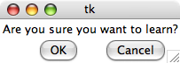
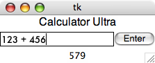
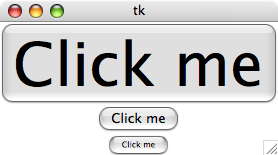
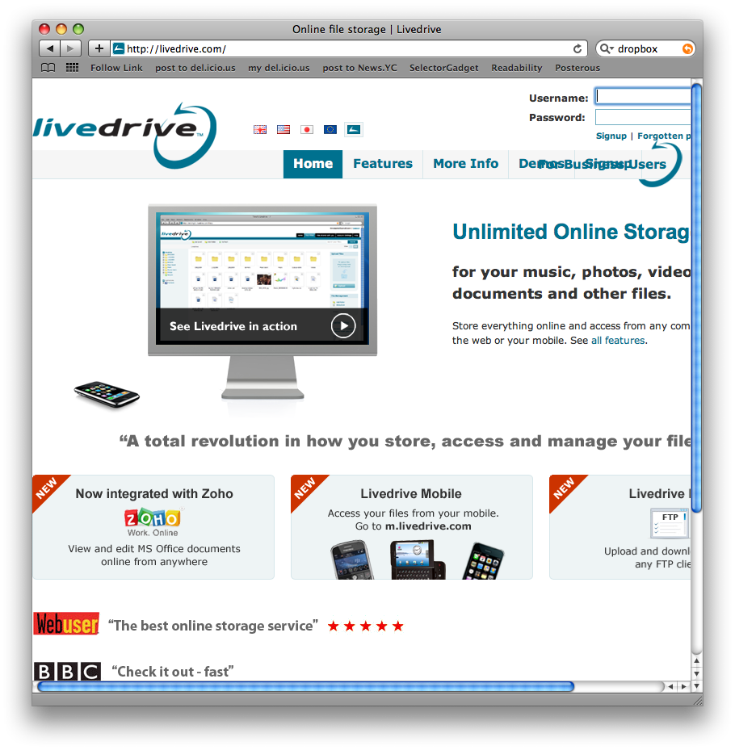

1) Introduction
- You Don't Want to Type Everything to Use a Computer
- Typing everything requires remembering arcane commands without error
- Some information is hard to present as text
- This lecture looks at how to build programs with Graphical User Interfaces (GUIs)
2) You Can Skip This Lecture If...
- The phrase event-driven programming doesn't scare you
- You can use Tkinter to design a graphical-user interface
- You know what Fitt's Law and Hick's Law mean
3) Dive In
import Tkinter
window = Tkinter.Tk()
question = Tkinter.Label(window, text="Are you sure you want to learn?")
ok = Tkinter.Button(window, text="OK")
cancel = Tkinter.Button(window, text="Cancel")
question.grid(row=0, column=0, columnspan=3)
ok.grid(row=1, column=1)
cancel.grid(row=1, column=2)
window.mainloop()

Figure 22.1: Result
4) Explaining the Code
- The Tkinter module
- Windows
- Labels, Buttons and other components
- Parent links
- The Grid
5) A More Advanced Example
import Tkinter
window = Tkinter.Tk()
titleLabel = Tkinter.Label(window, text="Calculator Ultra", font=("Helvetica", 16))
result = Tkinter.StringVar()
resultLabel = Tkinter.Label(window, textvariable=result)
equation = Tkinter.StringVar()
def evalCommand():
result.set(eval(equation.get()))
equationEntry = Tkinter.Entry(window, textvariable=equation, font=("Futura",))
solveButton = Tkinter.Button(window, text="Enter", font=("Helvetica",), command=evalCommand)
titleLabel.grid(row=0, column=0, columnspan=3)
equationEntry.grid(row=1, column=0, columnspan=2)
solveButton.grid(row=1, column=2)
resultLabel.grid(row=3, column=0, columnspan=3)
window.mainloop()

Figure 22.2: Result
6) Tkinter Mutable Types and Other Lessons
- You can change the visual appearance of all the components
- The font option allows you to change font styles
- You can change colours, styles and formatting, too
- But you probably shouldn't...
- Tkinter Mutable Variables
- Examples: StringVar, IntVar, DoubleVar
- Use as labels for components, use as data storage for input components
- Use get() and set() methods to operate on the values
- Commands let you run code in response to events like button clicks
7) Event-Driven Programming
- Your other programs run from start to finish
- Graphical programs just run, waiting for the user to choose what to do next
- This inversion of control is called event-driven programming
8) Model-View-Controller
- Much of programming is about separating specialized components
- Models store and validate data
- Views display models
- Controllers handle events and manipulate
9) Design Example
import Tkinter
window = Tkinter.Tk()
big = Tkinter.Button(window, text="Click me", font=("",60))
medium = Tkinter.Button(window, text="Click me")
small = Tkinter.Button(window, text="Click me", font=("",8))
big.pack()
medium.pack()
small.pack()
window.mainloop()

Figure 22.3: Result
10) Design
- The CRAP laws of graphic design
- Contrast
- Repetition
- Alignment
- Proximity
- Fitt's Law: Targets are easier to click the closer and bigger they are
- Hick's Law: Adding choices makes it slower to decide
11) DropBox Signup

Figure 22.4: DropBox Signup
12) LiveDrive Signup

Figure 22.5: LiveDrive Signup
13) Summary
- GUIs can make your programs easier to use
- Tkinter is a library that makes GUIs easy to make
- A few basic design principles help a lot